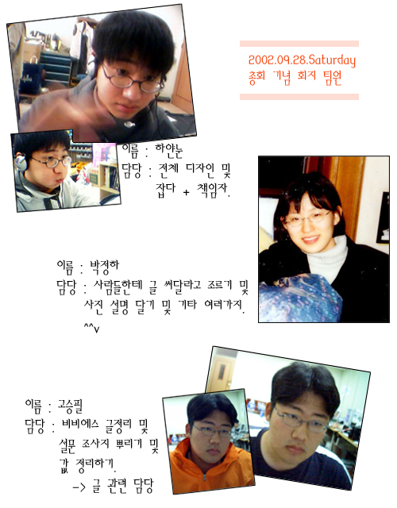

| ::: 회지 제작 후기 :::
_ MR 01 하얀눈 -
작년 회지 팀에 이어서
올해 회지 팀 책임을 맡게 되었네요. ^^
나름대로는
회지 어떻게 어떻게 만들고 싶다고 많이 생각했었는데,
저 자신의 미숙함과 시간 문제로 여러 가지 면에서
너무나 부족하게 만들 게 되어 버렸네요.
플래시로
만들어 보고도 싶었고,
이쁘게 해보고도 싶었고,
글도 많이 모아 보고 싶었고,
MR 02, 01
사진이랑 간단학 소개 같은 것도 넣고 싶었는데,,,
그래도 어떻게 해서 두 번째 CD 회지를 만들 게 되어서
나름대로 만족해요.
^^
못다한 건
그냥 홈페이지에서 이루기로 하고,
잠시 미루어야
하겠죠?
끝으로, 배경 음악 제작해주시느라
고생하신 세미 누나에게 감사하고,
02가 둘밖에 없어서
일 할당량이 많았는데도 아무 말 없이 꿋꿋!하게 일해준
정하와 승필이에게 감사하단 말을 하고 싶네요.
내년엔
좀 더 잘 만들어 보렴, 아이들아. ^^
_ MR 02 정하 -
드디어 오늘이 총회네요 ^^*
빨리 CD로 구워야 할텐데 ... =.= (눈팅이 오빠랑 승필이 오빠랑 점점 폐인 틱한 모습으로... -.-)
처음 회지 팀을 뽑는다고 했을 때 사실은 회지를 예쁘게 만들겠다는 각오보다는 쇼하기 싫어서 ( ... ) 회지를 만든다고 했었습니다. (눈팅 오빠 죄송해요 -*- )
제가 맡은 일은 사람들을 조르고 볶고 짜서 (;;) 글을 받아내는 것하고 사진에 설명붙이는 것이었는데요 예상했던 것보다 글 수득률(??)이 좋지는 않지만 그래도 이번 기회를 통해서 잘 친하지 않던 분들과도 조금은 더 가까워진 것 같습니다 ^.^
아! 그리고, 제 꼬장을 못 이기시고 (__)* 회지에 실을 글을 써주신 분들 정말로 감사합니다! (안 써준 02들 미워! -.-;)
마지막으로 눈팅이 오빠랑 승필이 오빠 너무 수고 많으셨습니다!!
- MR 02 승필 -
총회가 다가오고
있었다. 무언가를 해야 겠다는 마음에 가장 만만해 보이는(?)
회지팀에
지원했고 채훈이형,정하와 함께 회지를 제작하게 되었다.
처음에는
무슨 신문 조그마한거 하나 만드는 것인줄 알았다.
그런나..나의
발상은 완젼히 빗나갔고
미스터의 회지는 종합(?)
멀티미디어의 산물이었다.
글을 모아오고 사진에
설명을 붙이고 동영상을 편집하고 웹페이지를 제작하는
등등..내가 생각하던 회지와는 전혀 딴판인 그런것을 만들기
위해 노력해야 했다.
내가 맡은 부분은 사진에
간단한 설명을 붙이는 부분과 설문조사를 돌리고
통계를
내는일,동영상을 편집하는 일, 미스터 보드에 있는 글들을
정리하고 한해동안 있었던 일들을 조사하는 일 었다.
동영상을
편집하는 일은 해보지 않았던 일이라 상당히 까다로웠다.
비록
잘라 붙이는 수준에 지나지 않았지만 메뉴얼도 없는 상태에서 이것
저것 시행 착오를 거치면서 해낸 것이었기때문에 나름대로
뿌듯함을 느꼈다. 영상 제작 기술이란게 이렇게 편리하고
신기한 것이구나 한것을 새삼 스럽게 느겼고 나중에
이러한 프로그램을 만들어 봐야겠다는 생각이 들었다.미스터
보드의 글을 정리하면서 약 2000여개의 글을 읽게 되었는데
사람들의 생각이 많이 담겨진 글들이 많았다. 한해동안 동아리에
있었던 많은 일들이 머릿속에 스쳐 지나갔다.엠티,신입생
환영회,여름방학 개강.종강 파티 등등..또 입학하기 전의
일들을 보드를 읽으면서 상상해 보니 입가에 웃음이
나왔다. 지금의 형,누나들과는 다른 모습을 예전 보드에서
볼수 있었기 때문이다 ^^;; 여러명이서 공동으로 일을
진행한것은 거의 처음이었다. 지금까지 웬만한 일들은
혼자서 처리해 왔기 때문에 조직속에 속해서 자기의
맡은 부분을 처리 하는 식의 일의 경험은 이번이 처음이다.
같이
회지를 제작한 채훈이 형과 정하와 이런 저런 일들에서 도움을
주고 받으면서 회지를 제작하다보니 협동의 중요성도 새삼깨닫게
되었고, 그 두사람과 더욱 친하게 지낼수 있는 계기가
마련되어서 좋았다.
내년에는 회지를 제작하는
팀을 이끌어 가야 하겠다 ^^;;

|